Murmurations of elliptic curves, in two orderings

Animation: for each elliptic curve \(E\), the root number \(\varepsilon(E)\) times \(a_p(E)\) is averaged over the primes \(p\) with \(p/N(E)\) in each of 100 bins, and then over curves. On the left, in teal, all curves \(y^2=x^3+Ax+B\) are added in order of naive height; on the right, in purple, curves of prime conductor are added in order of conductor. The noise dies down and each family settles onto its own shape. The white curves are the densities conjectured by Sawin and Sutherland, averaged over the same bins.
For an elliptic curve \(E\) with conductor \(N(E)\), root number \(\varepsilon(E)\) and coefficients \(a_p(E)\), and \(0<C_1<C_2\), consider the average of $$\frac{\log\big(N(E)\tfrac{C_1+C_2}{2}\big)}{N(E)}\sum_{\substack{p\in(C_1N(E),\,C_2N(E)]\\ p\text{ prime}}}\varepsilon(E)\,a_p(E)$$ over a family of curves. Write \(E_{A,B}\colon y^2=x^3+Ax+B\), with no prime \(p\) such that \(p^4\mid A\) and \(p^6\mid B\), and \(H(E_{A,B})=\max(4|A|^3,27|B|^2)\).
Conjecture 1 (Sawin–Sutherland). Over \(\{E: H(E)\le X\}\), the average tends, as \(X\to\infty\), to $$\int_{C_1}^{C_2}2\pi\sqrt{u}\sum_{\substack{q\ge1\\ q\text{ squarefree}}}\sum_{m\ge1}\frac{\mu(\gcd(m,q))}{q\,m\,\phi\big(q/\gcd(m,q)\big)}\,J_1\!\Big(4\pi\frac{\sqrt{u}\,m}{q}\Big)\prod_{p\mid q}\hat\ell_{p,2v_p(m)}\prod_{p\mid m,\ p\nmid q}\ell_{p,2v_p(m)}\,du.$$
Prediction (7) (Sawin–Sutherland). Over \(\{E: N(E)\le X,\ N(E)\text{ prime}\}\), the average tends to the same integral with \(\prod_{p\mid m}\tilde\ell'_{p,2v_p(m)}\) in place of the two products, where $$\tilde\ell'_{p,\nu}=-\frac{1}{p}\Big(1+\sum_{f}a_p(f)\Big),$$ the sum running over the normalized Hecke eigenforms \(f\) of weight \(\nu+2\) and level \(1\).
The local factors \(\ell_{p,\nu}\) and \(\hat\ell_{p,\nu}\) are averages of \(a_{p^\nu}\) over \(p\)-adic curves \(E_{A,B}\), given explicitly in Lemmas 3 and 4 of the paper. The paper proves a smoothed analogue of Conjecture 1 (its Theorem 2).